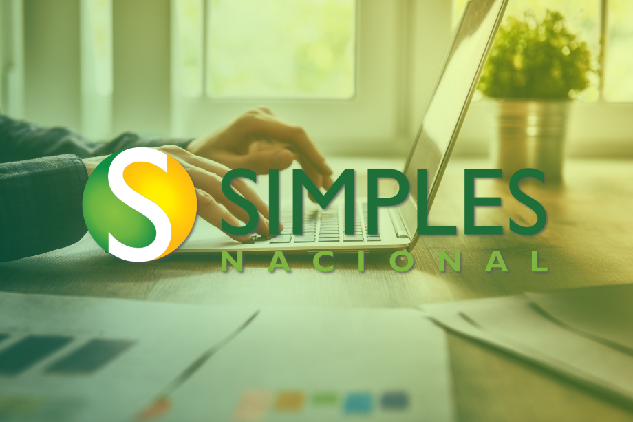

O ICMS no Ceará trata-se de um imposto com grande volatilidade e com bastantes Decretos e Instruções Normativas que regem o mesmo, uma empresa que segue as regras de ICMS a risca tem maior prosperidade e pode repassar ao consumidor final de forma justa para ambos.
No ramo de supermercado por exemplo, o ICMS é regrado pelo Decreto 29.560/2008, onde trás a obrigatoriedade, para o ramo varejista e atacadista, do recolhimento do ICMS por Substituição Tributária.
Nesse caso o ICMS é recolhido na entrada da mercadoria no estabelecimento, desfazendo a cadeia de ICMS nas operações seguintes.
O ICMS no Ceará trata-se de um imposto com grande volatilidade e com bastantes Decretos e Instruções Normativas que regem o mesmo, uma empresa que segue as regras de ICMS a risca tem maior prosperidade e pode repassar ao consumidor final de forma justa para ambos.
No ramo de supermercado por exemplo, o ICMS é regrado pelo Decreto 29.560/2008, onde trás a obrigatoriedade, para o ramo varejista e atacadista, do recolhimento do ICMS por Substituição Tributária.
Nesse caso o ICMS é recolhido na entrada da mercadoria no estabelecimento, desfazendo a cadeia de ICMS nas operações seguintes.

No ano de 2018 o Simples Nacional passou por uma reformulação com relação a forma do cálculo do valor devido pelo contribuinte.
Mudanças Simples Nacional 2018
* Os limites de faturamento vão aumentar
O limite de faturamento irá saltar para R$ 4,8 milhões por ano
* O anexo VI deixará de existir
* Os anexos III e V vão passar por fortes alterações.
Para maiores informações entre em contato e saiba o que muda para sua empresa
 Uma empresa com uma organização contábil eficiente se torna mais competitiva no mercado
No Brasil atual, a corrupção começa dos setores de baixo, não é a maioria, porém alguma empresas buscam de certa forma burlar as legislações vigentes a fim de diminuir sua carga tributária, porém isso é um risco enorme para a empresa, pois ela pode estar diminuindo sua carga nos dias atuais, mas no futuro irá arcar com juros e multa em cima do que foi omitido.
O fisco está cada vez mais fechando o cerco para empresas que usam esses métodos, as informações fiscais estão a cada dia passando por cruzamentos justamente para identificar possíveis fraudes fiscais
Daí surge a importância de sua empresa contar com uma contabilidade séria e que trata das suas informações de forma ética, para que no futuro sua entidade não tenha danos graves
Uma empresa com uma organização contábil eficiente se torna mais competitiva no mercado
No Brasil atual, a corrupção começa dos setores de baixo, não é a maioria, porém alguma empresas buscam de certa forma burlar as legislações vigentes a fim de diminuir sua carga tributária, porém isso é um risco enorme para a empresa, pois ela pode estar diminuindo sua carga nos dias atuais, mas no futuro irá arcar com juros e multa em cima do que foi omitido.
O fisco está cada vez mais fechando o cerco para empresas que usam esses métodos, as informações fiscais estão a cada dia passando por cruzamentos justamente para identificar possíveis fraudes fiscais
Daí surge a importância de sua empresa contar com uma contabilidade séria e que trata das suas informações de forma ética, para que no futuro sua entidade não tenha danos graves